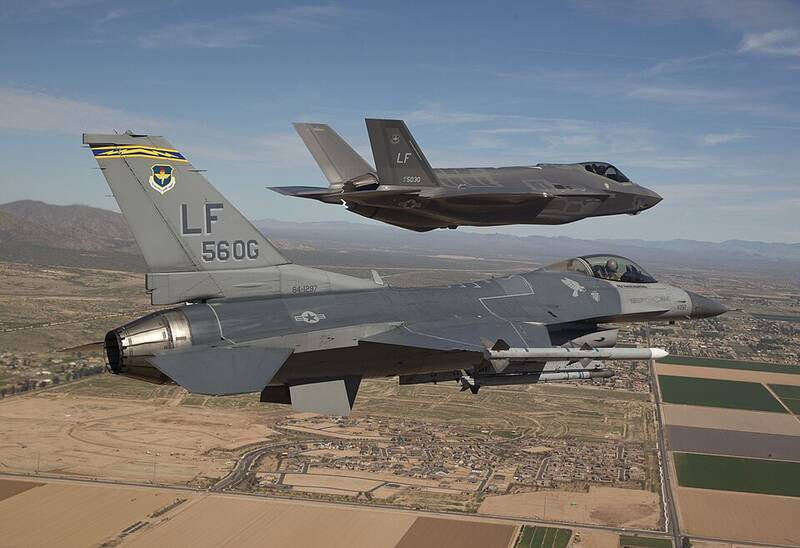

Luke AFB Arizona Arizona · Military base · 33.536°N, 112.381°W An F-16 escorting the first F-35 to Luke Air Force Base, 2014. Photo: U.S. Air Force, Public domain (source) F-35 training base west of Phoenix. 1 Open in the interactive Watcher Sources Luke Air Force Base Wikipedia